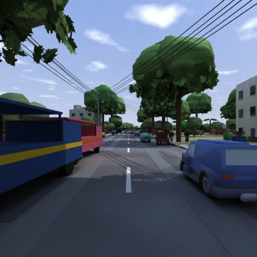

Every pixel labelled, because we drew it.
Fraktal builds procedural worlds of African and Southeast Asian places and renders them from satellite, drone and street-level cameras. The labels come from the renderer, not from annotators or a model, so they cannot drift from the pixels.
Three GeoTIFFs and a manifest: image, class labels and instance labels for one 500 m tile. No sign-up.

One world, any camera.
The same seeded world renders from orbit, from a drone and from the kerb. A fixed seed gives the same world and the same object IDs every time, so a car in one frame is the same car in the next.

Street scenes are the least finished view: roads are smooth, people are block figures and parked props are boxes. We say so in the status section.
What is in the download.
Real GeoTIFFs you can open in QGIS or GDAL, and a manifest that says how they were made. The imagery is rendered, not photographed.
| rgb.tif | 3 × uint8, the rendered image |
|---|---|
| class.tif | 1 × uint8 with a colour table: ground, building, tree, vehicle, pole, person, drone, wall, yard object |
| instance.tif | 1 × uint16, one ID per object, stable for a given seed |
| sample.json | CRS, pixel size, class shares, sun angle, seed, scene hash |
Class share in this tile
Straight from sample.json. Vehicles and poles are rare, as they are in a real tile, which is why we report shares and do not hide them.
You can see where every pixel came from.
Synthetic data is only useful if you can trust what is in it. Three things are checked in the repo, not promised on a page.
Labels by construction
Class and instance masks are rendered by the same camera as the image. There is no annotator and no model in the loop, so there is no label noise to measure.
Deterministic worlds
Randomness comes from named substreams of one seed. The same seed gives the same world, and a pinned test checks a content hash of each layer.
Licensed assets only
46 materials, 32 textures and 9 meshes, each with a licence row checked in CI: owned, CC0, or generated by a model with permissive output terms. Marketplace assets and CC-BY are out.
Does it help a real model? We do not know yet.
We built Fraktal on the bet that enough realism and enough variety make synthetic data useful for pretraining. No training run has been done, on purpose: we are saving the GPU for a first benchmark per biome, once the pilot cities look right. When it lands we will publish it, including if it is negative.
Working today
- Satellite, drone and eye-level renders with exact class and instance labels
- Seeded, reproducible worlds with stable IDs
- Moving traffic and people on the road network
- A provenance manifest and a licence check on every asset
- A real-time Godot viewer to drive, walk or fly a world (a demo, not a capture path)
Still open
- Whether synthetic pretraining improves a real model: not measured
- Pilot cities (Manila-Quezon, Nairobi centre, Khartoum): most class shares sit within one standard deviation of the reference photos we keep locally, but Khartoum contrast and vegetation are 2.8 and 1.5 deviations off
- Road surfaces are smooth, people are block figures, parked props are boxes
- Building facades and street furniture are flat
- SAR is planned, not built
Need a region, sensor or camera we do not have?
Tell us the place, the sensor, the pixel size and the classes you need, and we will tell you what we can render and how long it takes. This is an early version and we are looking for people to try it on a real problem.
Email jian@abangai.dev